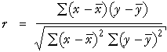

Plot of z-scores for X and Y

The conventional formula for r is

However it can also be expressed as a kind of 'average' of the products of the z-scores for X and Y.

It would be a proper average if 'population' standard deviations (with divisor n instead of (n - 1)) had been used to standardise X and Y.
The colouring denotes the sign of the product — blue for positive, red for negative. Use the slider to show how the crosses are mostlly in the blue regions when r > 0 and in the red regions when r < 0.
The diagram is 3-dimensional. Drag the centre towards the top left to show the surface corresponding to the product of the z-scores.